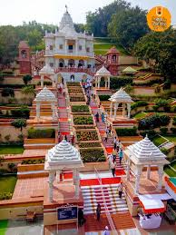

ABOUT ALANDI...
Alandi Dewachi is a town and a municipal council in the Pune district in the state of Maharashtra, India.
The town is popular as a place of pilgrimage and the resting place of the 13th century Marathi saint Dnyaneshwar
who has written the book named Dnyanwshvari in the Marathi on the basis of Shreemad Bhagavad-Gita.
he economy of Alandi was historically based around its status as a place of pilgrimage.
Although the major festivals in the town are held only twice a year, pilgrims from all over Maharashtra visit the place
throughout the year. The needs of the pilgrims are catered for by groups of Brahmins who officiate at the samadhi, weddings,
or religious services to the bereaved.Vendors outside the main temple complex offer goods, such as garlands and turmeric,
for worshipping at the samadhi along with religious souvenirs and books. Marathi Hindu castes such as the Padmashali have built
Dharmashalas (Pilgrim rest houses) that offer accommodation to pilgrims from their castes.The temple's two main festivals
occur in Shaka month of Jyeshtha (late June - early July), when the Dnyaneshwar's palkhi departs for the Pandharpur Wari, and in
the second half of the Shaka month of Kartik (November). During these festivals, a significant percentage of local population earns
income by offering accommodation, catering and other services to the pilgrims. However, a significant number residents also have
negative feelings about these festivals.The local Municipal council also collects pilgrim or goods tax for public health
provision.
A report for Pune metropolitan area in 1991 stated that because of religious nature of the place, industry will not be allowed in Alandi.
Referances...
https://en.wikipedia.org/wiki/Alandi
https://www.nativeplanet.com/travel-guide/alandi-a-spiritual-connection-like-never-before-004626.html
https://www.incredibleindia.org/content/incredible-india-v2/en/destinations/pune/alandi.html